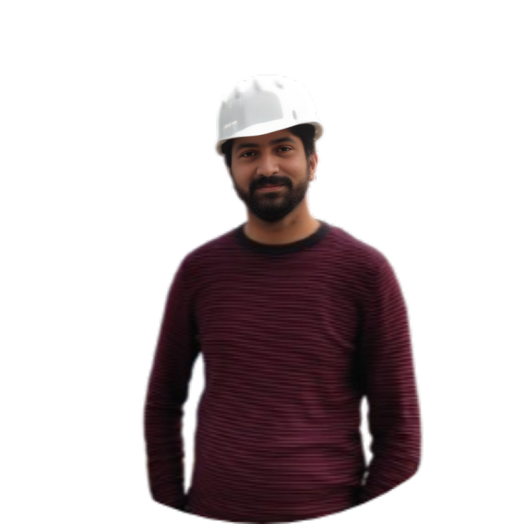

Hello, I'm
Bipan Banjara
Mechanical Engineer


Hello, I'm
Mechanical Engineer
Get To Know More

5+ years
Customer Service and Spare Parts Officer Mechanical Engineer

Mechanical Engineering
M.S Professional Engineering
I’m Bipan Banjara, a passionate mechanical engineer who loves to innovate and provide engineering solutions driven by the community. I was born and raised in the picturesque village of Panauti, Nepal, and this is where my journey started. The technical difficulties that my community’s farmers encountered stoked my interest in machines and their potential to enhance life. I was fascinated by technology’s ability to close productivity and resource disparities at a young age. My desire to learn more drove me to pursue a Bachelor of Mechanical Engineering degree at Kathmandu University, where I gained a solid technical foundation and an in-depth comprehension of mechanical systems.
Throughout the course of my career, I have worked in the heavy machinery and cement sectors for a number of years. In these capacities, I have held important positions including managing the installation and commissioning of modern machinery and optimizing thermal efficiency in rotary kilns of cement plant. These experiences strengthened my commitment to seeking engineering solutions that promote efficiency and sustainability in addition to improving my technical proficiency.
My move from Nepal to Australia gave me the opportunity to experience several work cultures, which shaped my career and personal development. This change in perspective made it clearer to me how crucial cooperation, cultural sensitivity, and adaptability are to succeeding in a variety of settings. I am excited to explore novel opportunities to develop and lead in the engineering sector as I enter the next phase of my career, studying a Master of Professional Engineering at the University of Technology Sydney (UTS). Using modern engineering techniques, I hope to develop effective and sustainable solutions that will benefit people in Nepal and around the world.
I like to go trekking, play football, and read about and explore engineering ideas in my spare time. These endeavor’s never cease to motivate and inspire me to use engineering to improve society.
Explore My
MAW Earthmovers Private Limited (JCB)
June 2022 - Jan 2023
Sarbottam Cement Limited
Jan 2017 - Jun 2022
Browse My
My Thoughts
1.1 Principles of Sustainability to Create Viable Systems
I reduced the plant’s environmental effect while I worked at Sarbottam Cement Limited by incorporating sustainability ideas into our operations. My main duty was to evaluate the thermal heat in the Rotary Kiln and make suggestions for how to lower the heat output. The plant’s carbon footprint was reduced by 15% and energy efficiency increased by 10% thanks in large part to this program, highlighting the significance of resource utilization.
In addition, I supervised a team that performed preventive maintenance, which greatly increased equipment longevity and decreased replacement frequency by 20%. We maintained the long-term viability of the system by maximizing equipment performance and minimizing resource consumption. This event served as a reminder of the value of proactive tactics in promoting sustainability in an industrial setting, such as process optimization and alternative resource use.
1.2 Professional Practice within intercultural and global contexts
I obtained a great deal of experience at Sarbottam Cement Limited working with professionals from a range of backgrounds, including the global team from FLSmidth in Denmark, in a culturally diverse workplace. Effective collaboration and the closure of these gaps need sensitive cultural understanding and clear communication. This experience underscored the value of flexibility and attentive listening in promoting teamwork, especially during the equipment commissioning period.
Through exhibiting adaptation and putting cultural sensitivity into practice, I was able to effectively manage various working styles and overcome obstacles. This experience reinforced my ability to work well with people from different cultural backgrounds and gave me the tools I needed to succeed in international settings.
Get in Touch